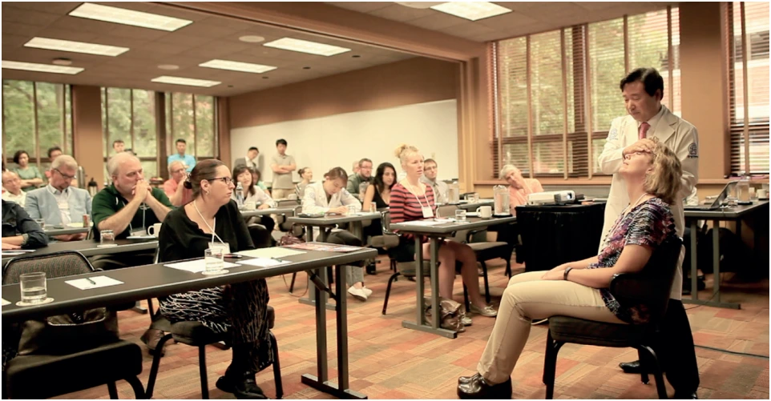
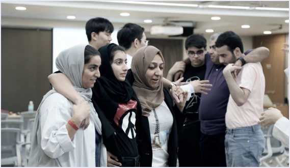
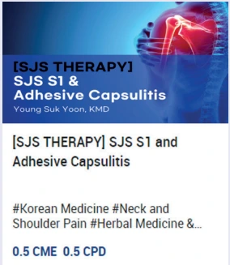
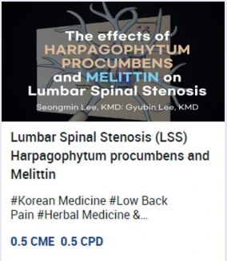
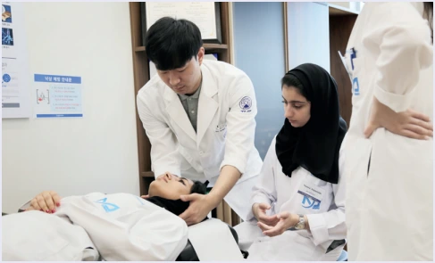
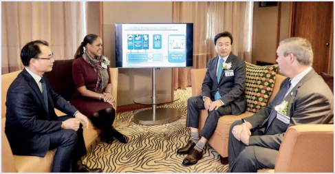

설립과 교육
2019년 자생한방병원 산하 국제 교육 전문기관으로 설립되었습니다. 의사(MD·DO)와 한의사 등 국내외 의료진에게 온·오프라인 교육 콘텐츠를 제공합니다.
국문·영문 동영상, 오디오, 텍스트로 자가학습할 수 있도록 구성하며 미국 CME 보수교육 콘텐츠를 중심으로 교육을 전개해 왔습니다.

주요 프로그램
자생국제학술대회(AJA)
통합의학 의료인들이 척추질환 치료·연구와 최신 근거를 교류하고 토론하는 학술대회입니다.
인턴십
예비의대생·의대생에게 한방병원 시스템과 치료 연구를 경험할 기회를 제공합니다.

보수교육 콘텐츠
의료인들과 협업해 CME 콘텐츠를 제작합니다.


실습 프로그램
대학·의료기관과의 교류를 통해 의대생과 의료인에게 자생 치료·한의학 교육을 제공합니다.

국제협력
학술대회와 강연 등으로 한방치료에 대한 이해를 넓힙니다.
